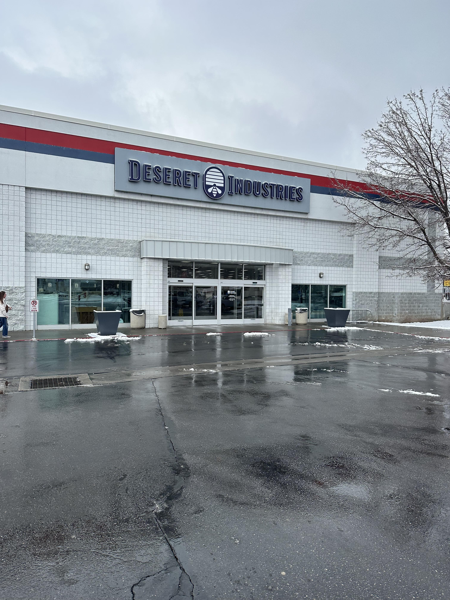

Pro Thrifting


Why People Love Thrifting
- You can find unique and vintage items that are no longer sold in stores.
- Thrift stores are often more affordable than traditional retail stores.
- Shopping at thrift stores is environmentally friendly by giving new life to secondhand items.
- Thrifting is a fun and exciting treasure hunt experience.
- You can support local charities and non-profit organizations that operate thrift stores.
-
Thrifting can help you develop a personal sense of style and creativity.
- With a variety of items available, you can mix and match different pieces to create a unique look.
- Thrift stores often have items from different eras and styles, giving you more options to experiment with.
Locations!!
